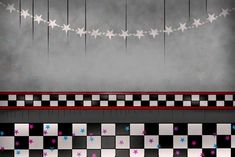

FNAF LA PELICULA
Fnaf la pelicula ha sido sin duda una de las niticias de las que mas se habla ultimamente y esque desde el 2015 se dio aviso de esdta pelicola con la empresa de sony mas sin embargo ninguno de los guiones convencio al creador de este juego, tiempo despues se dio la noticia de su cancelamiento y miles de fans quedaron tristes por la noticia.
Pero en abril de 2023 se empezaron a filtrar imagenes de los sets de grabaciones, que sin duda la gente empezon a dudar de la certeza, un mes despues se dio la noticia oficial por scott cautos quien afirmo en su cuenta de twitter que la pelicula estaria en ecena desde el 27 de octubre de 2023, cosa que tambien fue muy questionada por el tiempo tan corto que se demoraria en producir esta pelicula.
Que edad necesitas para poder ver la pelicula de fnaf?
aparte de su fecha de estreno tambien se a preguntado de que edad puedes ver la pelicula; y se ha dicho que es clasificacion 15+, lo cual fue criticadoi por muchos fans ya que la mayoria son publico infantil, asi que podemos deducir que va a ser un tanto fuerte
tambien se han revelado los actores de esta pelicula y si quieres saber de ellos puedes entraer al siguiente link:
https://www.sensacine.com/peliculas/pelicula-236844/reparto/
Si te a gustado esto te agradara saber que esta pelicula esta basada generalmente en los sucesos del primer videojuego creado por scott que dio inicio a esta hermosa familia.
FNAF tendra continuaciones?
Por ahora se puede decir que si ya que scott dijo que dependiendo del exito de esta pelicula se tomara la decicion de conseguir con mas peliculas, pero que el añora que asi sea pronto y que las peliculas llevaran tanto partes de videojuegos como las de los libros creados para esta franquisia.
